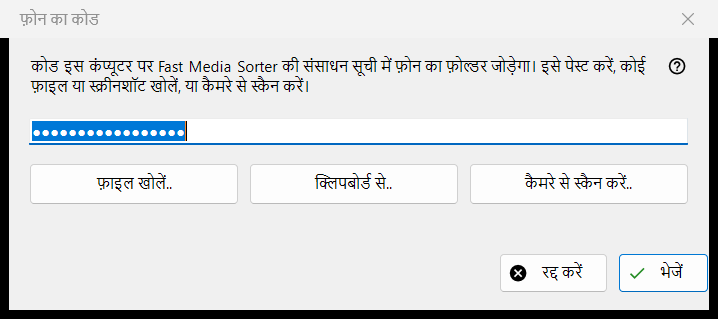
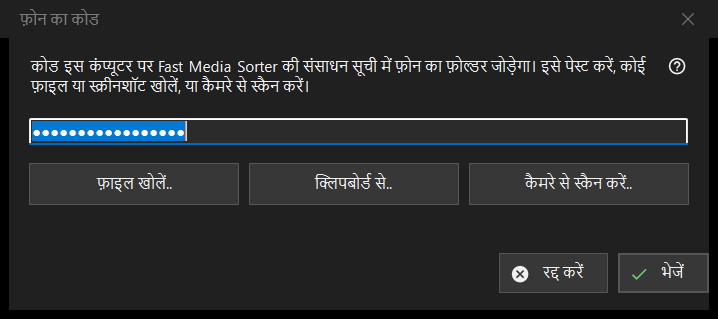

फ़ोन का कोड
यह किस लिए है
फ़ोन ऐप से बना कनेक्शन कोड लेती है और उसे Fast Media Sorter को सौंपती है, जो फ़ोन का फ़ोल्डर इस कंप्यूटर की अपनी संसाधन सूची में जोड़ता है। यह Share Manager की मुख्य विंडो के फ़ोन कोड.. बटन से खुलती है।


इस क्रम में
- कोड को चार में से किसी तरीके से विंडो में लाएँ: फ़ील्ड में टाइप या पेस्ट करें, या फ़ाइल खोलें.., क्लिपबोर्ड से.. अथवा कैमरे से स्कैन करें.. बटन दबाएँ।
- भेजें दबाएँ।
- जो Fast Media Sorter विंडो दिखे, उसमें फ़ोल्डर जोड़ने की पुष्टि करें।
तत्व
कनेक्शन कोड
एक पंक्ति वाला फ़ील्ड, जो अक्षरों की जगह बिंदु दिखाता है क्योंकि कोड गोपनीय है; वह कभी लॉग में नहीं लिखा जाता। फ़ील्ड खाली होने पर भेजें दबाने से कहा जाता है कि कोड टाइप करें, पेस्ट करें, या कोई फ़ाइल या स्क्रीनशॉट खोलें।
फ़ाइल, क्लिपबोर्ड और कैमरा
फ़ाइल खोलें.. .fmscfg, .json और .txt फ़ाइलें तथा QR छवियाँ (.png, .jpg, .jpeg, .bmp, .webp) पढ़ता है; फ़ाइल को विंडो पर खींचकर भी छोड़ा जा सकता है। क्लिपबोर्ड से.. कोड को क्लिपबोर्ड से पढ़ता है। कैमरे से स्कैन करें.. कैमरे की विंडो खोलता है, और स्कैन किए गए पाठ को ऐसे माना जाता है जैसे उसे पेस्ट किया गया हो।
भेजें
कोड की जाँच होती है, फिर उसे चलते हुए Fast Media Sorter को भेजा जाता है, जिसका अपना आयात संवाद फिर भी अपने सामान्य प्रश्न पूछता है। सफल होने पर स्थिति में लिखा आता है: कोड भेज दिया गया है: Fast Media Sorter विंडो में जोड़ने की पुष्टि करें। और यह विंडो बंद हो जाती है। यदि Fast Media Sorter नहीं मिलता, पुराना संस्करण है या उत्तर नहीं देता, तो कोड गोपनीयता चिह्नों के साथ क्लिपबोर्ड पर रख दिया जाता है, और स्थिति पंक्ति कहती है कि उसे संसाधन पैनल में क्लिपबोर्ड से आयात के ज़रिए पेस्ट करें।
स्थिति पंक्ति के संदेश
जो दस्तावेज़ न कनेक्शन कोड है और न संसाधन सेटिंग फ़ाइल, उसे अपठनीय बताया जाता है। नए संस्करण से बनी फ़ाइल कहती है कि Fast Media Sorter अपडेट करें। यदि कोई दूसरा प्रोग्राम क्लिपबोर्ड को पकड़े हुए है, तो स्थिति यह बताती है।
प्रबंधक सेटिंग · SFTP साझाकरण सेटिंग · एक्सचेंज सर्वर सेटिंग